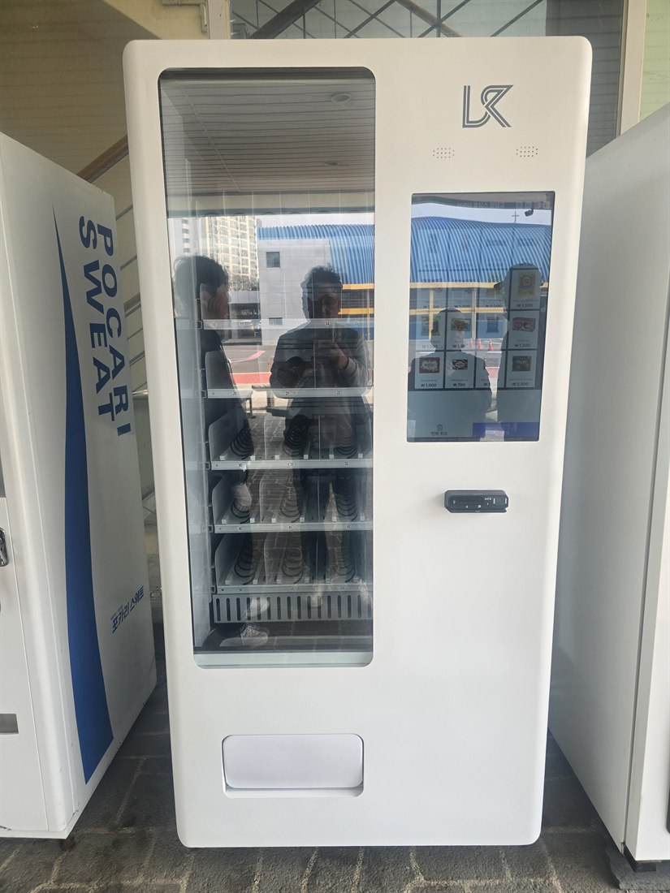
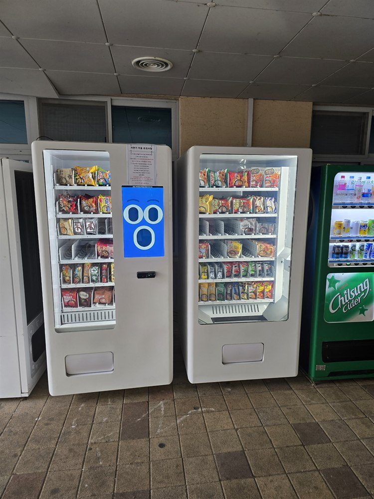

대학교 무인자판기 설치·임대 완전정리 — 수익률과 좋은 점

대학교·캠퍼스는 무인자판기 명당으로 꼽힙니다. 학생과 교직원 수천 명이 오가고, 강의동·도서관·기숙사처럼 사람이 오래 머무는 공간이 많은데 정작 근처에 편의점이 없는 경우가 많기 때문입니다. 그래서 대학교 무인자판기 설치를 알아보는 사장님이 늘고 있습니다. 이 글은 캠퍼스에 자판기를 두려는 분들이 필요한 정보 — 좋은 점, 임대 vs 구매, 수익률, 설치 체크리스트를 정리한 것입니다.
1. 대학교에 자판기가 좋은 이유
① 유동 인구가 확실 — 학기 중엔 등·하교, 강의 사이 쉬는 시간에 수요가 몰립니다.
② 편의점 대체 — 캠퍼스 안엔 매점·편의점이 부족해 자판기가 그 역할을 합니다.
③ 24시간 — 도서관·기숙사는 밤에도 사람이 있어 야간 매출이 납니다.
④ 인건비 0원 — 무인으로 운영돼 관리 인력이 필요 없습니다.
⑤ 여러 대 배치 — 강의동마다 두면 한 캠퍼스에서 여러 대 매출이 나옵니다.

2. 캠퍼스 어디에 설치하면 잘 되나
같은 대학이라도 자리에 따라 매출이 크게 갈립니다. 강의동 로비·복도는 쉬는 시간 회전이 빠르고, 도서관·열람실은 밤샘 공부하는 학생들로 커피·간식이 잘 나갑니다. 기숙사 자판기는 야식·생필품 수요가 크고, 학생회관·체육관·통학버스 정류장도 목이 좋습니다. 사람이 머물거나 대기하는 곳일수록 좋습니다.
3. 대학교 자판기, 뭘 파나
요즘 스마트 자판기는 화면에서 고르고 카드로 결제해 한 대에 여러 품목을 담습니다. 생수·이온음료·탄산·커피 같은 음료, 컵라면·과자·간식, 시험기간엔 에너지음료, 그리고 문구·생활용품·마스크까지 캠퍼스 수요에 맞춰 채웁니다. 냉장·냉동을 나눠 아이스크림·냉동식품을 더하기도 합니다.

4. 임대 vs 구매 — 수익률로 보면
대학교 자판기는 임대(렌탈)와 구매 중 고를 수 있습니다.
• 임대·렌탈 — 초기 자본 없이 월 이용료만으로 시작합니다. 매출로 이용료를 회수하는 구조라 부담이 적고, 자리가 안 맞으면 정리하기도 쉽습니다. 캠퍼스에 여러 대를 깔아보고 반응을 보며 늘리기 좋습니다.
• 구매 — 한 번에 사서 이후 월 비용이 없어, 자리가 검증되고 장기 운영이 확실하면 총비용이 낮습니다.
수익률만 보면, 검증 전엔 임대로 리스크를 낮추고, 잘 되는 자리는 구매로 전환하는 방식이 안전합니다.
5. 수익률이 좋은 이유 (그리고 현실적인 변수)
좋은 이유 — 인건비 0원, 자릿세가 저렴하거나 없는 경우가 많고, 학기 중 유동이 확실해 회전이 빠릅니다. 카드·간편결제라 현금 관리도 필요 없습니다.
솔직한 변수 — 방학에는 매출이 크게 줄어듭니다(성수기·비수기 편차). 그래서 학기 중 재고를 두껍게, 방학엔 품목을 줄이는 운영이 필요합니다. 또 학교 승인·계약 조건에 따라 자릿세(임대료)나 수수료가 붙을 수 있으니 계약 전에 꼭 확인하세요. 안 될 자리는 저희가 먼저 말씀드립니다.
6. 대학교 자판기 설치, 이렇게 알아보세요
① 학교 승인·계약 — 총무과·시설과의 설치 허가나 입찰 조건, 자릿세·계약기간 확인.
② 전기·통신 — 설치 위치의 콘센트·통신 환경.
③ 결제 — 카드·삼성페이·카카오페이·네이버페이·QR 지원(학생은 현금을 거의 안 씁니다).
④ 원격 관리 — 재고·매출을 원격으로 보는지(여러 대·캠퍼스 관리에 필수).
⑤ 냉장·냉동 옵션 — 음료 냉장, 아이스크림·냉동식품용 옵션.
⑥ A/S — 고장·재고 대응이 빠른지.
⑦ 입지·품목 컨설팅 — 우리 캠퍼스 학생에 맞는 품목을 잡아 주는지.
7. 대학교 자판기, 이렇게 시작하세요
H포스는 설치비 무료로 대학교·기숙사·도서관·학생회관에 맞춰 스마트 자판기를 구성해 드립니다. 카드·간편결제 연동, 원격 재고·매출 관리, 냉장·냉동 옵션까지 세팅하고, 임대(렌탈)·구매 중 수익률에 맞는 방식을 함께 정합니다. 학교 설치 협의와 서류도 챙깁니다.
어느 대학·어느 건물에 두려는지, 학생 규모만 알려주시면 예상 품목과 임대·구매 중 뭐가 유리한지까지 무료로 상담해 드립니다.
📞 대학교 무인자판기 설치·임대 상담 010-6832-1994